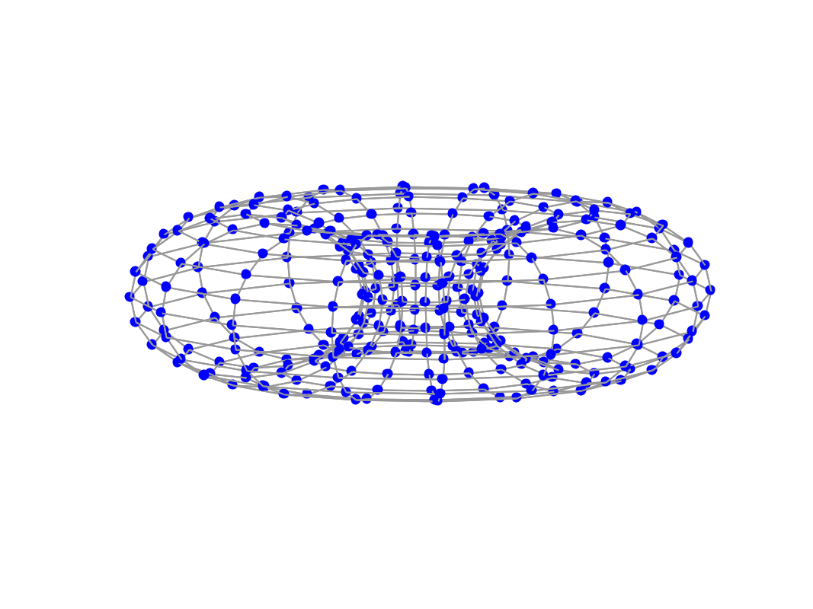

G=gsp_path(N);
| N | Number of vertices along the first dimention (default 16) |
| M | Number of vertices along the second dimention (default N) |
| G | Graph structure. |
The 2dring graph correspond the graph used for the DFT2.
Example:
G = gsp_torus(16,20); param.show_edges = 1; gsp_plot_graph(G,param);
G. Strang. The discrete cosine transform. SIAM review, 41(1):135--147, 1999.